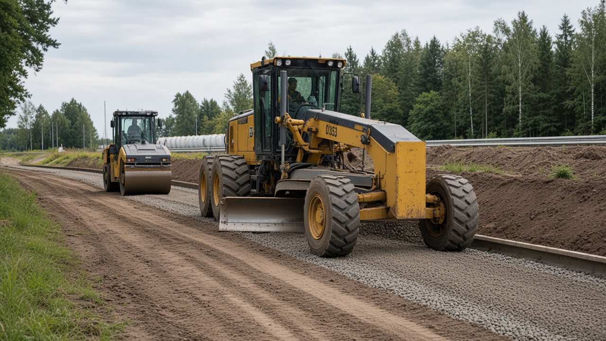
Budowa dróg
Budowa, przebudowa i modernizacja dróg, dojazdów oraz placów wraz z przygotowaniem podłoża i wykonaniem nawierzchni.
Profesjonalne usługi budowlane i infrastruktury drogowej
Firma Mar-Buddróg specjalizuje się w budowie i przebudowie dróg oraz infrastruktury lądowej. Z doświadczeniem ponad 20 lat na rynku, gwarantujemy najwyższą jakość wykończenia i terminowość realizacji.
Świadczymy usługi na terenie całej Polski – zarówno dla dużych firm generalnych wykonawców, samorządów lokalnych, jak i inwestorów prywatnych. Nasze zespoły składają się z doświadczonych pracowników, którzy dbają o każdy szczegół realizowanego projektu.
Każdego klienta traktujemy po partnersku. Nasza dewiza to: solidnie, bezpiecznie i w przystępnej cenie.
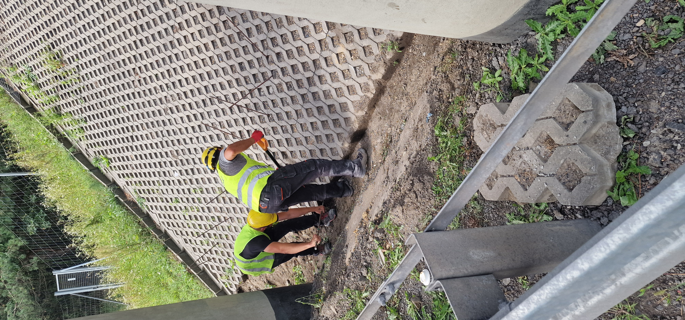
Wszystkie nasze prace realizowane są zgodnie z najwyższymi normami BHP. Regularnie certyfikowany sprzęt i przeszkolona kadra.
Ponad 20 lat doświadczenia w budowie dróg i infrastruktury na terenie całej Polski.
Każdy projekt realizujemy z dbałością o każdy szczegół. Stosujemy wyłącznie certyfikowane materiały najwyższej klasy.
Dotrzymujemy ustalonych terminów. Nasze realizacje zawsze przebiegają zgodnie z harmonogramem i budżetem.
Realizujemy prace ziemne, drogowe i rozbiórkowe. Dysponujemy własnym sprzętem, dzięki czemu sprawnie obsługujemy inwestycje budowlane i drogowe.

Budowa, przebudowa i modernizacja dróg, dojazdów oraz placów wraz z przygotowaniem podłoża i wykonaniem nawierzchni.
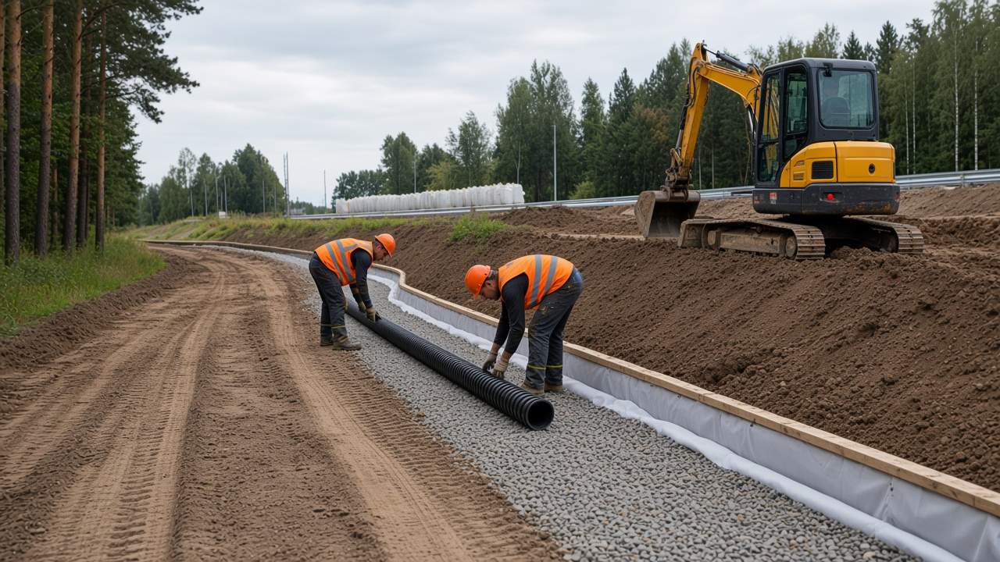
Wykonujemy drenaże odprowadzające nadmiar wody z terenów inwestycji, posesji oraz obiektów budowlanych.
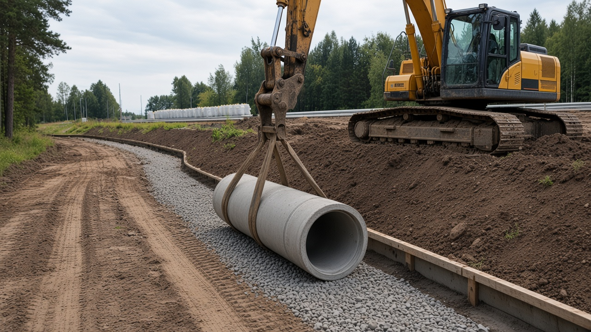
Wykonujemy systemy odwodnienia terenu, dróg i placów, zapewniające skuteczne odprowadzanie wód opadowych.
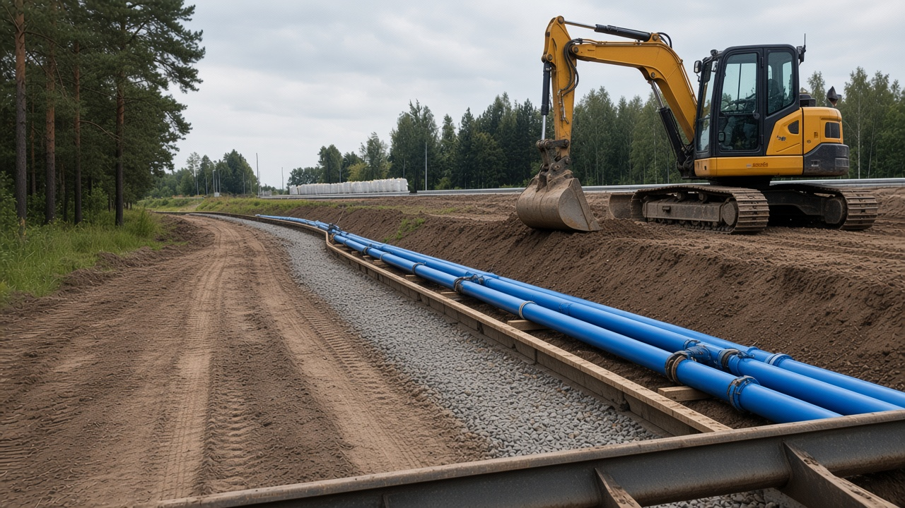
Realizujemy prace ziemne i przygotowanie terenu pod budowę oraz rozbudowę sieci wodociągowych.
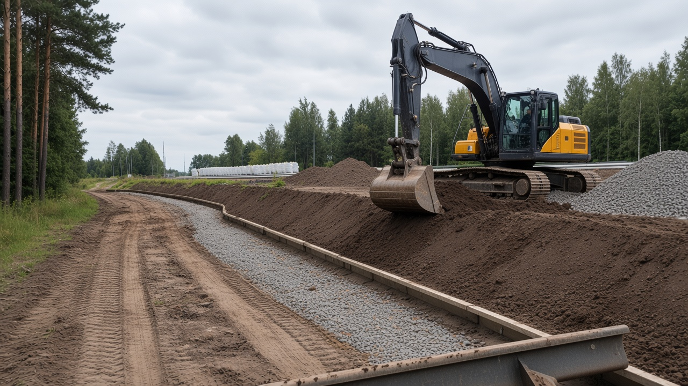
Oferujemy prace koparką przy wykopach, niwelacji terenu, przygotowaniu podbudowy i załadunku materiałów.
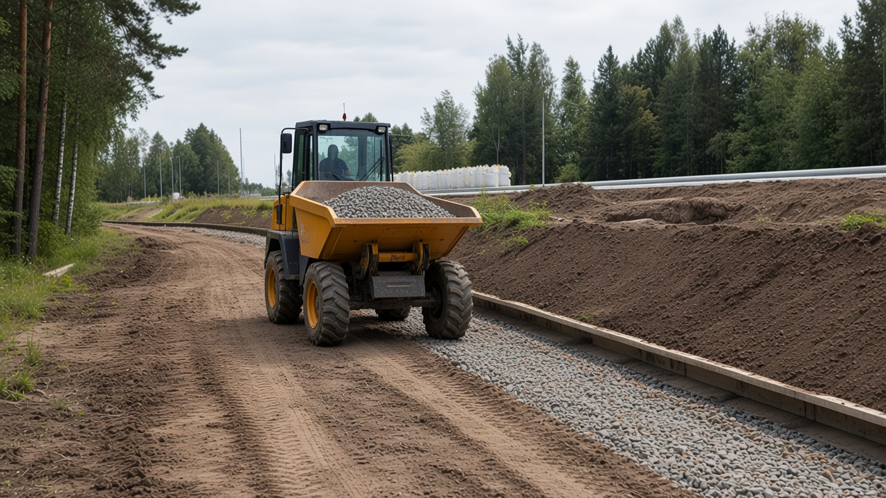
Zapewniamy przewóz ziemi, kruszyw i innych materiałów na terenie budowy przy użyciu wozidła.
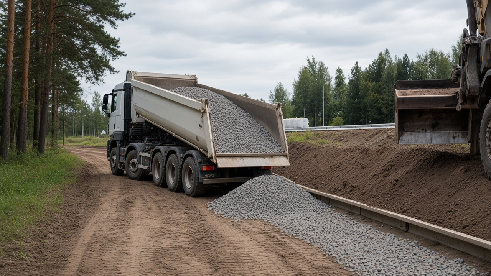
Organizujemy transport piasku, kruszywa, ziemi oraz innych materiałów sypkich na miejsce realizacji.
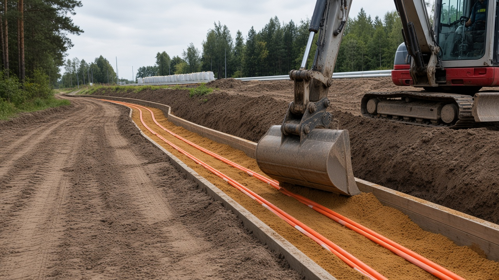
Wykonujemy precyzyjne wykopy pod kable energetyczne, telekomunikacyjne i instalacje podziemne.
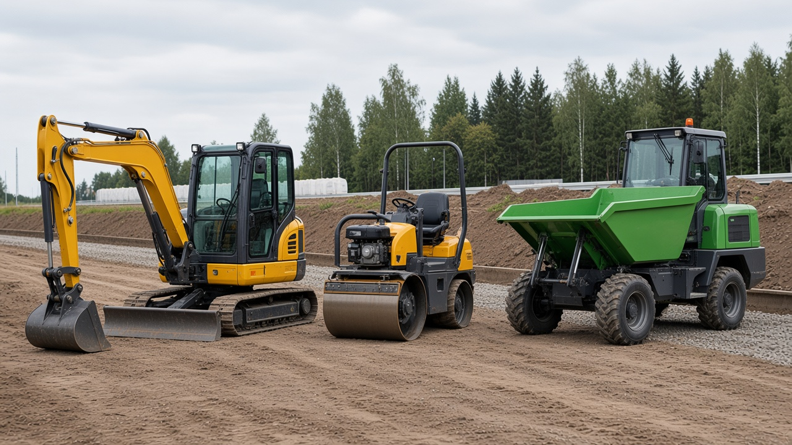
Udostępniamy sprawny sprzęt budowlany do prac ziemnych, drogowych, transportowych i porządkowych.
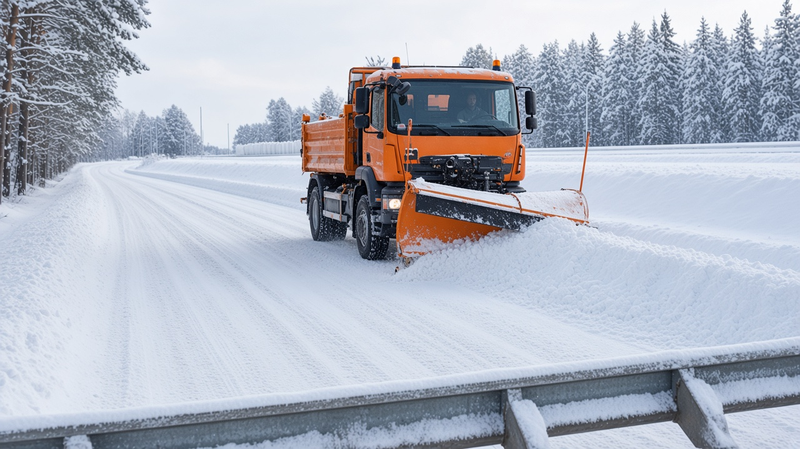
Odśnieżanie dróg, placów i terenów zewnętrznych podczas akcji zimowej.
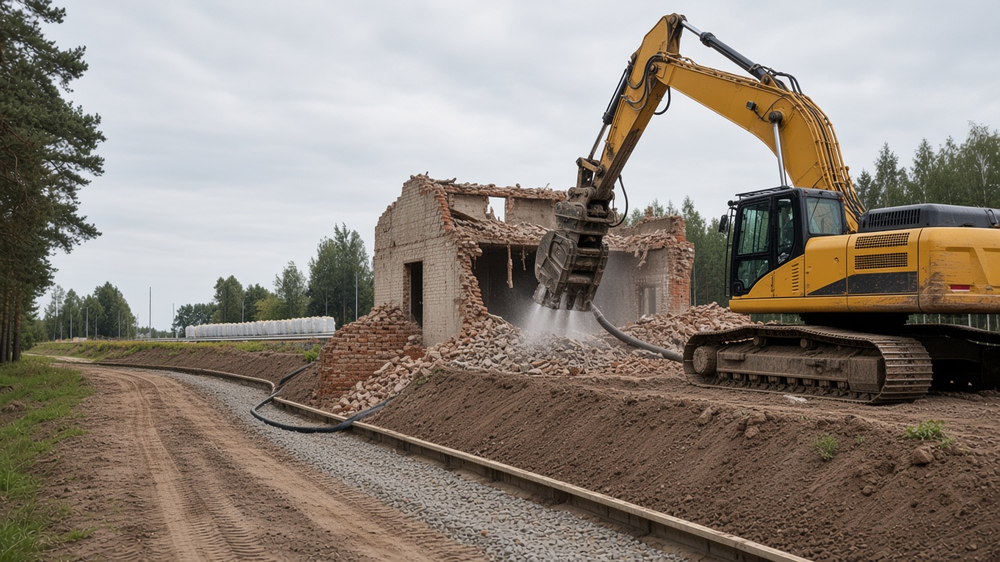
Bezpieczne i sprawne rozbiórki budynków wraz z przygotowaniem terenu po zakończeniu prac.
Szczegóły naszych realizacji oraz zakres prac. Przełączaj zdjęcia strzałkami lub kliknij, aby otworzyć pełny podgląd.
Kompleksowe przygotowanie podłoża, wykonanie warstw konstrukcyjnych podbudowy oraz montaż krawężników wraz z poprawą bezpieczeństwa i organizacji ruchu.
Wykonanie systemów odprowadzających wody opadowe i gruntowe z pasów drogowych oraz terenów inwestycji wraz z zabudową przepustów i barier ochronnych.
Zabezpieczanie nasypów drogowych, przyczółków i cieków wodnych przed erozją przy użyciu płyt betonowych oraz wielopoziomowych konstrukcji gabionowych.
Realizacja wykopów pod wodociągi, kanalizację i linie kablowe oraz obsługa budowy własnymi koparkami i wozidłami w wymagających warunkach terenowych.
Przewiń, aby zobaczyć więcej realizacji. Kliknij zdjęcie, aby powiększyć.